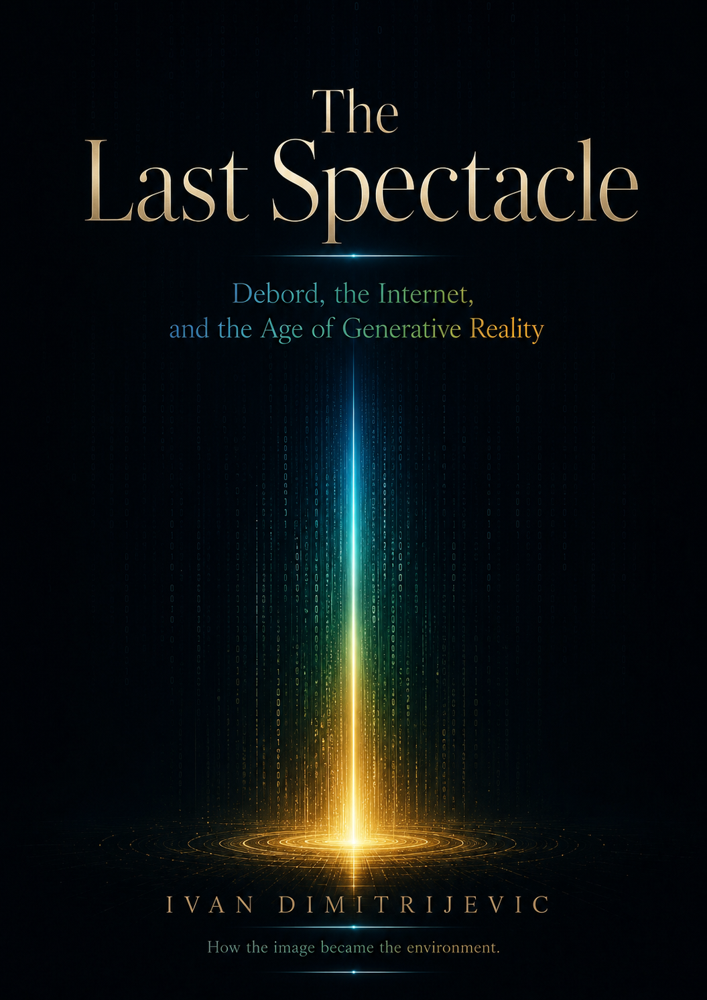

The image starts standing between people and reality. Appearance becomes a system.
Free digital book · PDF release v1.0
TheLast Spectacle
Debord, the Internet, and the Age of Generative Reality
A short nonfiction book about how representation moved from broadcast media to platforms, algorithms, and AI — and why proof, memory, judgment, and direct experience matter more when reality can be generated at scale.

The spectacle did not disappear.
It moved from representation, to broadcast, to platforms, to algorithmic ranking, to generative reality. AI does not arrive into a direct world. It arrives into a world already trained to trust surfaces.
Centralized media scales the frame. One message reaches millions and standardizes attention.
The audience becomes the interface. The crowd performs, reacts, and trains the system.
The spectacle stops only showing the world and starts producing finished appearances on demand.
The old spectacle asked us to watch. The platform spectacle asked us to perform. The generative spectacle can now produce appearance on demand.
Inside the book
The book is organized in four parts, each with a visual concept map designed to make the argument easier to remember.
Why this book exists
This is not an anti-AI book. It is a book about proof, trust, authority, public memory, and what happens when representation becomes generative.
- For founders and operators thinking about trust in the AI era.
- For marketers tired of confusing visibility with credibility.
- For readers who feel that Debord suddenly became current again.
Reality needs witnesses.
The future will not arrive by saying, “I will replace reality.” It will arrive by saying, “I will make reality easier to handle.”